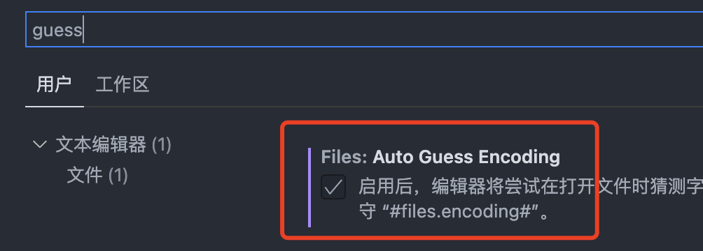
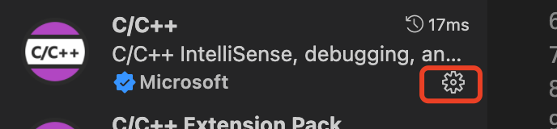
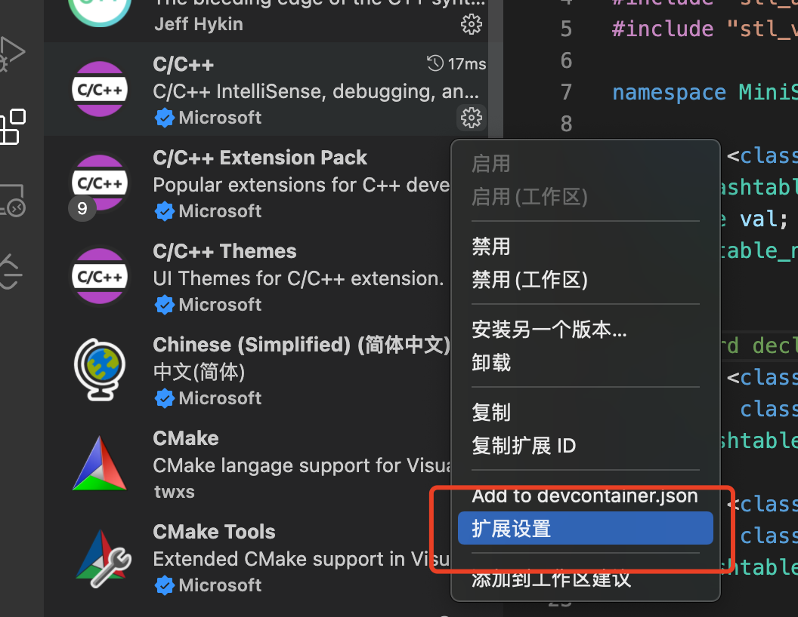
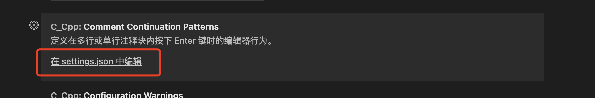
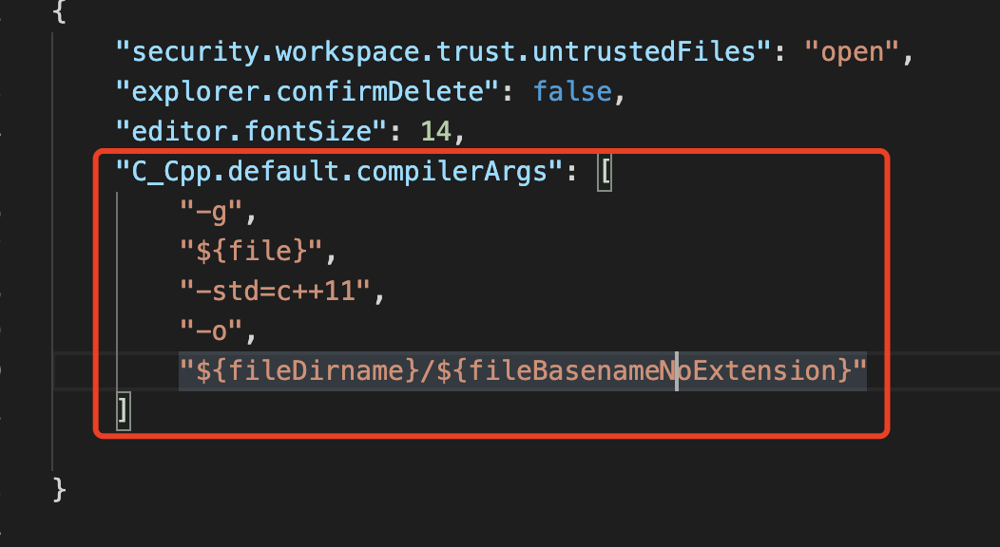

Vscode Macos配置 2021-12-20 Technology 文章目录 1. 配置自动猜测编码2. 插件fileheader autocode3. 运行及调试C++程序4. 去掉vscode C++11特性代码报红 写在前面 由于切换macos之后，用的是m1 pro的版本，所以有些vscode的地方可能不大一样，本篇blog用来介绍vscode macos环境下所涉及到的一些配置。 配置自动猜测编码 插件fileheader autocode运行及调试C++程序这一篇的话后续再进行介绍。 去掉vscode C++11特性代码报红问题现象：C++ 11特性的代码执行没有任何问题，但是在编辑器中有红色波浪线，很难受。 解决办法： 首先点击   